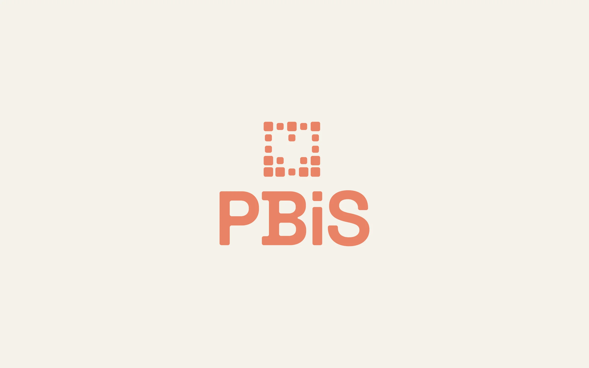
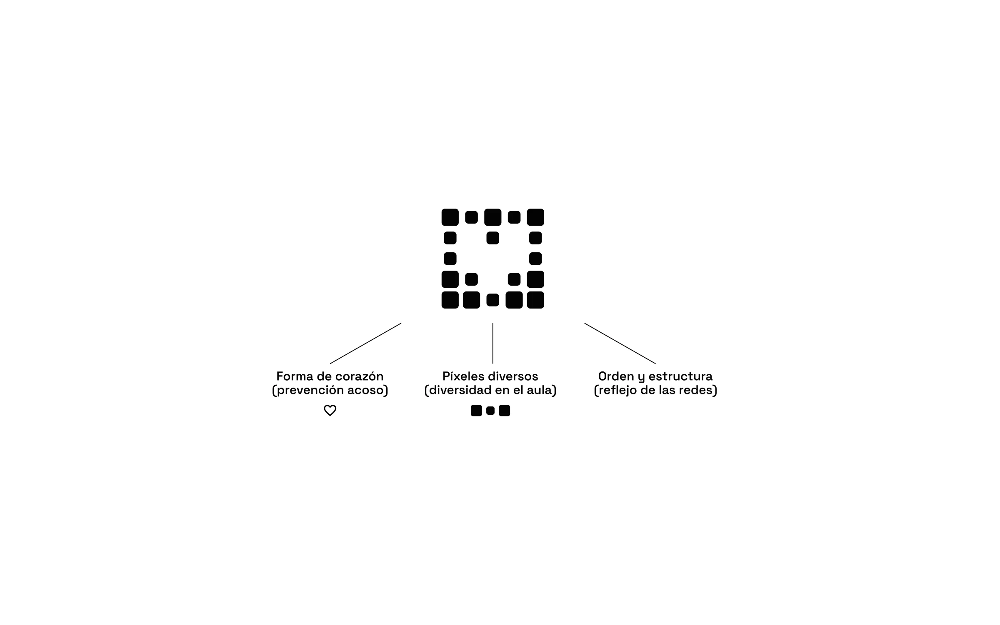
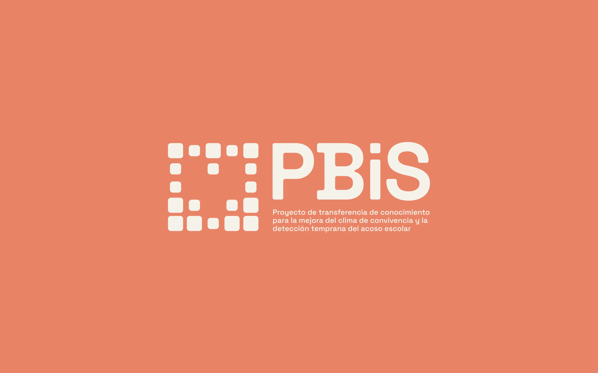
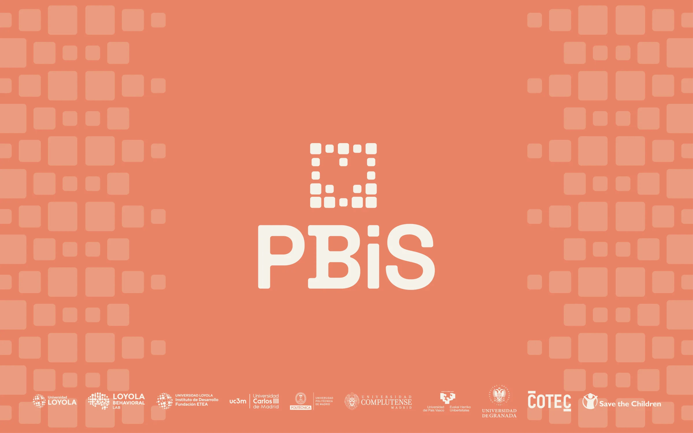

Universidad Loyola
PBiS
Un proyecto de transferencia de conocimiento para mejorar el clima de convivencia en los centros educativos y detectar el acoso a tiempo.
- Cliente
- Universidad Loyola
- Año
- 2026
- Servicios
- Identidad, web
- Web
- pbis.es

Identidad
El símbolo es un corazón construido con píxeles de distintos tamaños: el corazón, por la prevención del acoso; los píxeles variados, por la diversidad en el aula; y la retícula, por el orden y la estructura de las relaciones que el proyecto mapea. Las formas redondeadas y una paleta cálida de coral y crema lo acercan a docentes, familias y alumnado, y el patrón se abre en fondos que acogen a todo el consorcio.



Web
pbis.es explica el programa a los centros educativos y los invita a participar. Los elementos interactivos facilitan entender el proyecto: se pueden explorar aulas de ejemplo y ver cómo un cuestionario de 15 minutos se convierte en un mapa de las relaciones entre el alumnado, de los grupos cohesionados a los fragmentados.